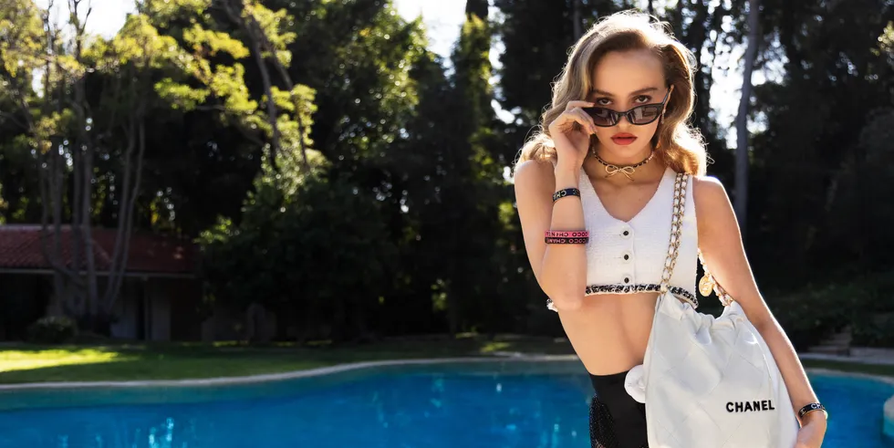

Lily-Rose Depp Is the Face of Chanel's Spring 2022 Campaign
Plus, more of the season's best ads.

If Fall 2021 was all about new beginnings, then it's only right that Spring 2022 continues the trend. Designers are keeping the party alive and amping up the glam in the spirit of getting shoppers excited about getting dressed up again (whether
they're actually going anywhere or not). Adding to the fantasy, some of the best campaigns for SS 22 transport audiences back to precedented times, when social gatherings were plenty with likes of Michael Kors and Ferragamo as proof. Just
ahead is a roundup of the stand out ads of the season.